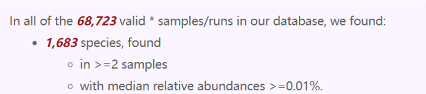
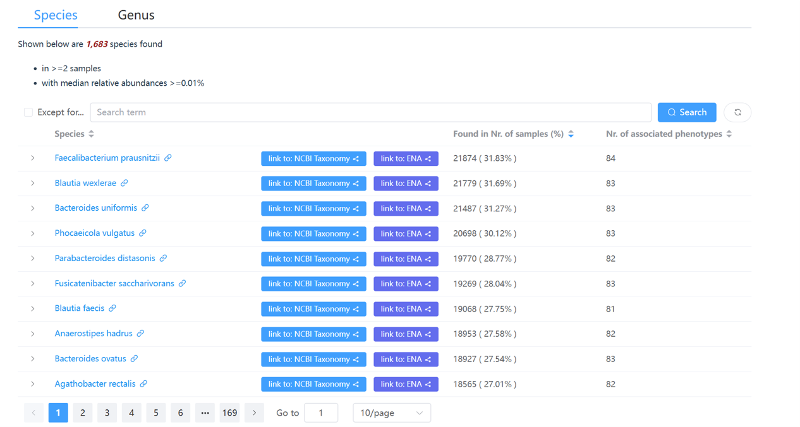
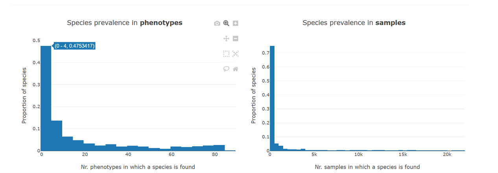
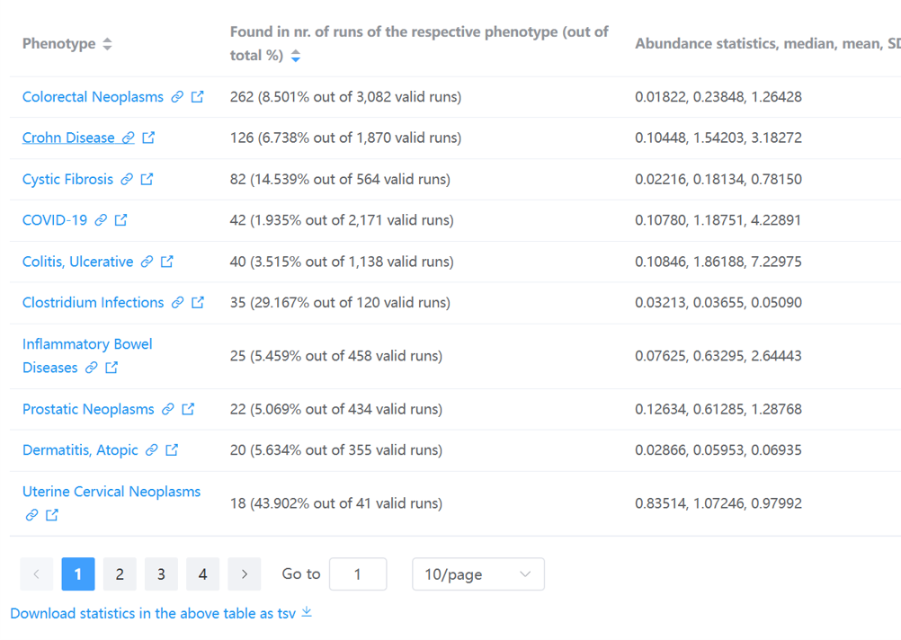
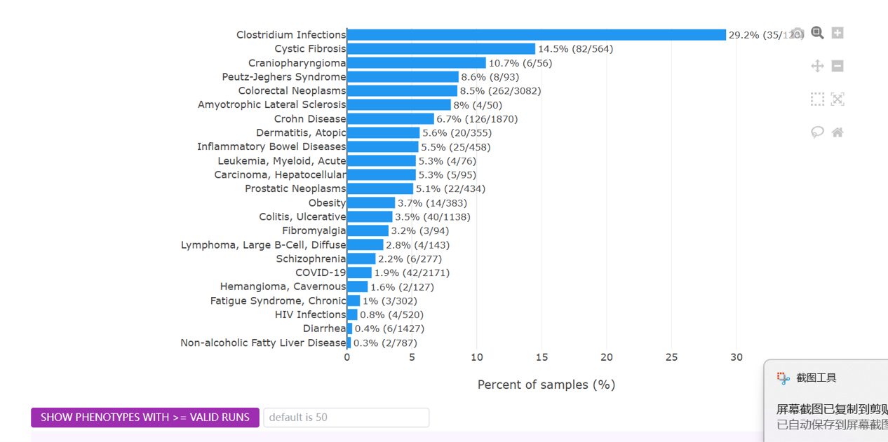
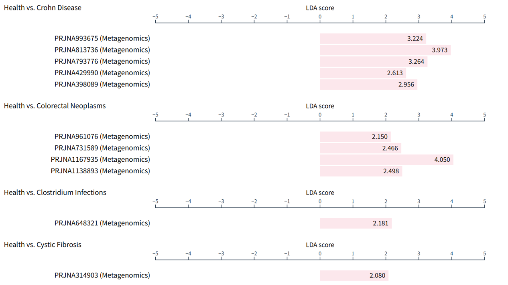

Gut microbe centric pages¶
Similar to disease centric pages, there are two types of gut microbe centric webpages , i.e., the information is organized around the microbe(s), including:
- the gut microbes page that lists all gut microbes identified in the qualified samples collected in GMrepo,
- the single taxon page that lists its associated diseases and distributions across diseases. If a taxon is a disease marker, the relevant information will also be included.
These pages will be described in detail below.
fontawesome-solid-book-open: All gut microbes¶
This page lists all gut microbes at species and genus levels included in
GMrepo. It consists of three sections.
1. Overview¶
This part provides simple statistics on the gut microbes collected in our database, for example:

2. Lists of all gut microbes¶
This part contains two data tables that list all gut microbes at species and genus levels respectively, and their associated phenotypes (i.e., diseases and health).

Users can click any of the taxa to view all relevant information of the taxon in our database in more detail.
Tip
- Because there are so many identified species (genera), this table lists a subset of which that are found in two or more samples with median relative abundances >= 0.01%.
- Users can use the widgets above the data table to search and filter the contents of the table. For example, users can enter a search term
Bacteroidesto find all species that contain Bacteroides in their names.
3. Statistics on taxon prevalence in phenotypes and samples¶
This part contains two histograms.
The first shows the distribution of the taxa in the phenotypes, while the second shows distribution of all the taxa in the samples.

For example, the first bar in the left panel means that about 47.5% of all species are found in four or fewer (0–4) phenotypes.
fontawesome-solid-book-open: Detailed information on a specific taxon¶
This webpage contains almost all information on a taxon in our database, including:
- its association with diseases,
- its prevalence and abundances across diseases,
- whether it is a marker, in how many diseases it serves as a marker, and its trends (i.e., enrichment and depletion) in diseases and healthy controls.
Here we use Fusobacterium nucleatum as an example to show the contents of this page.
1. Overview¶
This part summarizes very briefly the number of runs in which Fusobacterium nucleatum can be found, and the number of phenotypes (diseases and health) it is associated with.
It also includes links to external databases, including:
- NCBI taxonomic database
- ENA taxonomic database (if available)
2. Stats on associated phenotypes¶
This part contains a table and a barplot.
The table lists the associated diseases and the prevalence of Fusobacterium nucleatum in the corresponding disease-associated samples.

Users can click a disease name, e.g., Crohn Disease, to view more information on gut microbes associated with the disease in our database.
The barplot shows basically the same statistics:

Tip
- By default, phenotypes with more than
50 valid runswill be included in this barplot. - Users may increase/decrease this threshold using widgets above.
- Here
prevalenceis defined as percentage of runs in which the current taxon is present (with relative abundance >= 0.01%) out of valid runs.
3. Relative abundances of the taxon in different diseases and healthy samples¶
The relative abundances of the taxon across diseases and health are shown in:
- a density plot, and
- a boxplot.
See this example.
4. Marker taxon¶
Note
The markers are identified on a per-project basis, and between:
- either a disease and health (e.g., colorectal cancer (CRC) vs. healthy controls),
- or different stages of the same disease (e.g., CRC and adenoma)
In
GMrepo,
marker information in this microbe-centric page is presented using a table and a barplot.
As shown below is the barplot view of Fusobacterium nucleatum as a marker taxon:

Note
- From this plot we can see that
F. nucleatumhas been identified as a marker in many diseases. - It shows consistent enrichment in diseases as compared with healthy controls.
- It also shows consistent trend in multiple projects related to the same disease (e.g., Colorectal Neoplasms (CRC)).